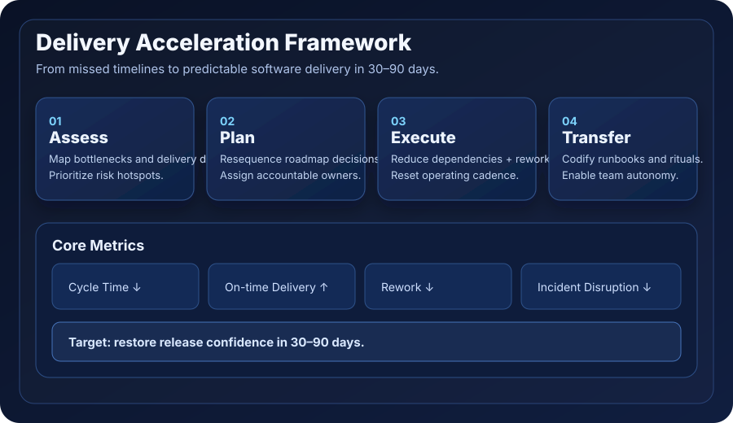
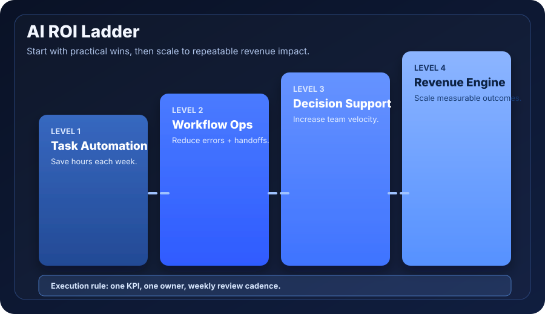

Outcome-first structure
Every section answers one buyer question: what changes, how fast, and who owns execution.
For CTOs, VP Engineering, and technical founders running 10–100 engineer teams.
BeyondZenith is a fractional CTO + execution partner for teams missing key dates, carrying technical drag, or struggling to turn pilots into production outcomes. In 30–90 days, we reset leadership rhythm, architecture decisions, and delivery accountability so shipping becomes predictable again.
Start with a 30-minute strategy call. You’ll leave with clear priorities, owners, and first interventions — no slide deck, no hard sell.
Why this feels different
Every section answers one buyer question: what changes, how fast, and who owns execution.
Quantified wins are pulled up early so credibility appears before process detail.
Every service page shows scope, timeline, deliverables, and ownership so buyers can decide without extra discovery loops.
Get practical tools to diagnose delivery risk and prioritize interventions before committing budget.
If Google only crawls a few pages first, these are the pages we want to win: delivery recovery, fractional CTO, and AI integration.
Delivery recovery timeline
Industry: Logistics SaaS · Stage: Scale-up · Team: 22 engineers
Problem: Releases slipping by multiple months. Intervention: delivery governance model + architecture simplification. Outcome: release cadence improved from quarterly to biweekly.
Cloud cost reduction
Industry: HealthTech platform · Stage: Growth-stage · Team: 14 engineers
Problem: Margin pressure from rising infrastructure spend. Intervention: service decomposition + observability-led rightsizing. Outcome: sustained cost reduction while maintaining release velocity.
Automation savings
Industry: B2B SaaS operations · Stage: Startup-to-scale transition · Team: 11 engineers + ops
Problem: Manual triage and repetitive operational workflows. Intervention: AI integration consulting with workflow guardrails. Outcome: recovered operator time redirected to customer-critical work.
BeyondZenith is led by Anastas — Technical Director at Whitefox. Operator track record includes ~2x year-on-year revenue growth and ~2x team growth while supporting global expansion programs.
This is founder background and operating experience, not a formal endorsement claim. See full operator track record →
Restored predictability by installing weekly governance and dependency controls.
Moved from experimentation to measurable automation outcomes with guardrails.
Reduced technical drag through targeted architecture decisions and sequencing.
Part-time technical leadership for roadmap, architecture, delivery governance, and hiring decisions.
Identify high-impact automation opportunities and implement practical pilots with guardrails.
When architecture is slowing delivery, we run architecture and technical due diligence to expose constraints, rank risk, and unblock reliable shipping.
Roadmap churn, delivery dates slipping, and technical decisions made reactively.
Install weekly delivery governance, tighten architecture decisions, and sequence work by commercial impact.
Higher delivery predictability, clearer ownership, and fewer high-cost fire drills within a 30–90 day horizon.
Get a practical recovery plan tied to delivery bottlenecks, technical risks, and measurable outcomes.
Schedule a strategy call Download delivery recovery guide Run delivery ROI calculatorSee the 30–90 day execution model → · Estimate impact with the ROI calculator →
Priority paths: software delivery recovery · fractional CTO consulting · fractional CTO Melbourne · AI integration consulting · AI integration consulting Melbourne · technical due diligence Australia
30 minute operator session · review delivery blockers · rank highest-risk constraints · leave with a practical next-step plan.
No slide deck. No hard sell. Just a clear recovery path you can execute immediately.
Book Strategy CallAdvisory Sprint
AUD 3,500–6,500
Architecture and delivery diagnosis.
Best for: fast diagnosis + 30-day execution plan.
AI Integration Accelerator
AUD 8,000–18,000
Targeted AI opportunity + pilot.
Best for: measurable workflow ROI with clear ownership.
Fractional CTO Retainer
AUD 6,000–15,000 / month
Ongoing technical leadership.
Best for: sustained technical direction and delivery confidence.
Final scope and fees are set against measurable outcomes after discovery.
BeyondZenith is a consulting practice focused on pragmatic technical leadership for growing businesses. The approach is simple: choose the smallest set of changes that creates measurable operational and revenue impact.
Explore fractional CTO consulting, AI integration consulting, and technical due diligence. If delivery is already slipping, start with our delivery recovery guide. Founder operator track record →
10–100 person teams with delivery pressure, growing architecture complexity, and leadership that wants measurable execution outcomes.
Teams looking for low-cost task outsourcing, unclear ownership, or strategy without execution accountability.
Before a major scale step, platform rewrite, AI rollout, or when delivery predictability is slipping.
Featured Insight
System-level fixes to restore predictable delivery in 30 days.
A practical cost/impact comparison for growing businesses.
Where to start if you want measurable outcomes, not AI theatre.
A practical pre-scale checklist to avoid hidden technical risk.
How to scale engineering capacity without slow local hiring cycles.
Open full insights knowledge hub → · Software delivery recovery pillar guide → · Fractional CTO consulting service → · AI integration consulting service → · GEO Playbook: rank in AI answers → · Dedicated team guide for startups →
Use these infographics across your site, LinkedIn posts, and outreach decks.


Choose fractional CTO support when you need senior technical decision-making now, but full-time executive overhead is premature. It’s ideal during growth, transformation, or delivery recovery phases.
Yes. Engagements are collaborative by design: advisory, delivery governance, and architecture support can be layered around your existing team without replacing internal leadership.
Most engagements begin with a discovery call and a scoped plan. Once scope is agreed, kickoff timing depends on availability and urgency.
Ready to scope your next technical milestone?
Use our practical weekly scorecard to improve delivery predictability and decision clarity.